Growing and Selling the Perfect Perennial
Located in central New York in the heart of the Finger Lakes, Cayuga Daylilies offers a broad spectrum of daylilies. The botanical name, hemerocallis, is derived from two Greek words meaning "beauty" and "day". Individual blooms are generally open for only a day but there are successive flowers for a number of days during the blooming season. Daylilies are trouble-free perennials, adding color and interest to a garden throughout the summer. Our garden features moderately priced, cold-hardy cultivars. Over 250 varieties are on display.
Daylily Days
Daylily Days are weekends during peak season in July when our bounty is on display. Come visit to experience the beauty, ask questions, and select your favorite cultivars, if you wish. We dig in the fall for easy planting and care, but if you are from out of town, we can dig at the time and send them with you. Join us for one of our Daylily Days or contact us to make an appointment.
Directions to Cayuga Daylilies
From the South: In Ithaca take Rt. 79 West for 7 miles to the blinking light. Turn right on to Halseyville Rd. Cayuga Daylilies is the 2nd driveway on the right (.5 mi). Look for the "OPEN" banner.
From the North: On Rt. 96 go south through Trumansburg. From the Falls Restaurant go .9 miles; turn right onto Halseyville Rd. Go 5 miles, cross Aiken Rd. Cayuga Daylilies is the 2nd driveway after the 2nd house on the left. Look for the "OPEN" banner.
Browse our Daylily Collection
Below is a small sample of our many glorious daylilies. Click on a flower to view additional information. Download our catalog for a full listing of our cultivars. Bulbs can be purchased at one of our Daylily Days or by appointment. Check out what is in bloom on our Facebook page.
-

Strutter’s Ball
A regal, 28-inch tall black-purple lily with a small silvery white watermark, and silky halo above a lime green throat. It’s large, 6-inch blossoms bloom and bloom in mid season.
Photo by Stan Shebs | CC BY-SA 3.0
Strutter’s Ball
-
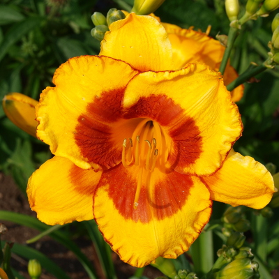
Fooled Me
A spectacular, award-winning lily. Stands 24 inches tall with large golden blooms, a startling large red eye and red edges. It is a prolific bloomer that will add pizzazz to a xeroscape garden.
Photo by F. D. Richards | CC BY-SA 2.0
Fooled Me
-
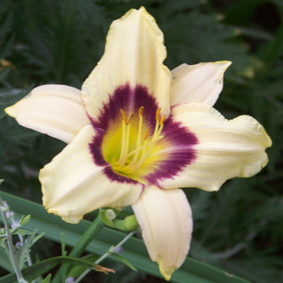
Pandora’s Box
One of the earliest arrivals, at a time when yellow and orange rule the daylily world. Pandora is fragrant, has evergreen foliage and will sometimes re-bloom. Its 4-inch wide cream colored blooms with a purple eye erupt like fireworks off of 19-inch stems.
Photo by Patrick Standish | CC BY 2.0
Pandora’s Box
-
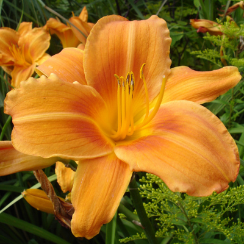
Rocket City
An award-winning show-stopper. It is a bittersweet orange with a burnt orange eye. Its large blossoms stand aloft 3 foot scapes. Wow the neighbors with a border of Rocket City. Bloom time: early mid season.
Photo by Epibase | GFDL 1.2
Rocket City
-
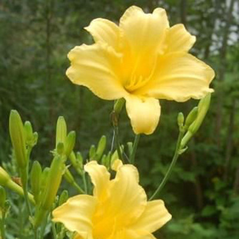
Statuesque
Sports clusters of buds along 5-foot stems which can bloom simultaneously displaying a profusion of yellow. Towering above most daylilies, Statuesque is perfect at the center of a circular bed or in the back of a border. Bloom time: mid season.
Statuesque
-
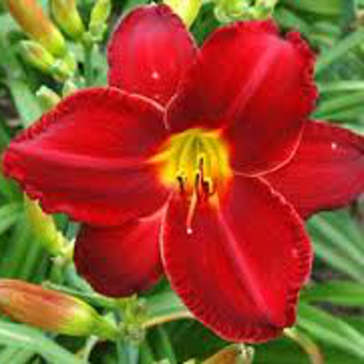
Lusty Leland
A veritable Christmas in July. Its 28-inch tall multiple branching stems culminate in large velvety red blooms nestled against large green leaves. It stays open into the early evening. Bloom time: mid season.
Lusty Leland
-
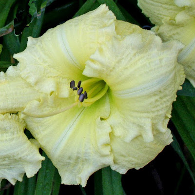
Brocaded Gown
Graces us profusely in early mid season. It has a lemon cream hue, a chartreuse throat and a unique texture resembling brocade. It has an extended bloom time, and may even re-bloom. Small wonder it won a Stout Medal, the Oscar of the daylily world.
Brocaded Gown
-
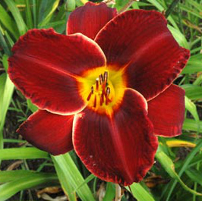
Illini Jackpot
Illini Jackpot displays 6-inch wide deep red blossoms on almost 3 foot stems. Illini Jackpot is definitely a “look-at- me” lily.
Illini Jackpot
-
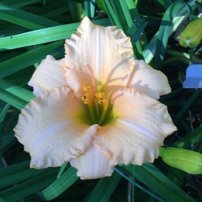
Lullaby Baby
Like a lullaby, this lily is lovely and calming. Diamond-dusted blush pink with ruffled edges, it is lightly fragrant, stays open beyond sunset, and will bloom with abundance early to midseason and again later on; stands 19 inches tall with 3 ½ inch blossoms.
Lullaby Baby
-
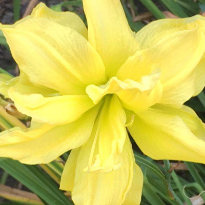
Double River Wye
Not only is this lily poetry in motion but it has many other virtues. It is a cheerful buttery-yellow, with loosely tiered blossoms, it will bring butterflies and hummingbirds into your garden midseason and then re-bloom at season's end, and it is drought tolerant. It can be grown in partial sun/shade, stands 30 inches tall with 4 ½ inch blooms.
Double River Wye
-
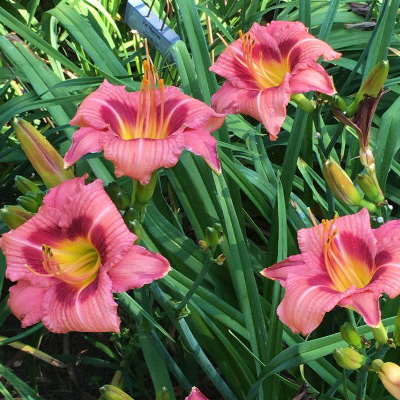
Always Afternoon
2012 Royal Hemerocallis Society award winner—this lily is happiness itself. It sports numerous rose purple blooms with dark purple eyes and slightly ruffled petals; stands 22 inches high and blooms early in the season.
Always Afternoon
-
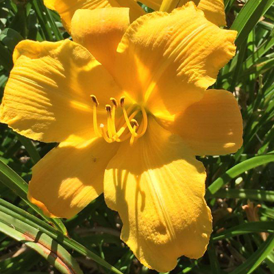
By Myself
This award-winning lily is a tour de force. It is 32 inches tall with enormous 6 ½ inch blossoms. It has a high bud count for lingering pleasure. Blooms midseason.
By Myself
-
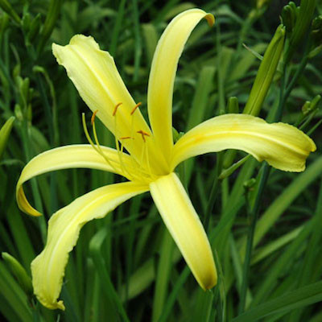
Kindly Light
This soft yet luminous yellow-green spider is both a surprise and complement in the perennial garden, especially amidst deep green. It stands 2 feet tall and has a super-extended bloom time of 16 hours, making it a lovely addition to bouquets and arrangements; blooms mid season.
Kindly Light
-
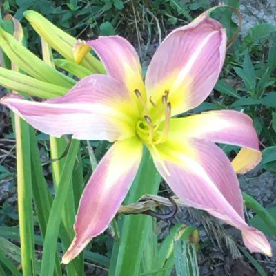
Lilting Lavender
A lovely, lavender-pink cascading lily with a yellow throat that spills onto its petals. It is 3 feet tall, with 8-inch blooms and an extended bloom time; blooms profusely, mid to late season.
Lilting Lavender
-
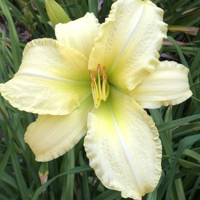
Ice Carnival
A fragrant, near-white lily with a chartreuse throat. It blooms mid season and will re-bloom. It is an especial joy on overcast or gray days; stands 28 inches tall with 6 inch blossoms; a good mid-sized border plant.
Ice Carnival
-
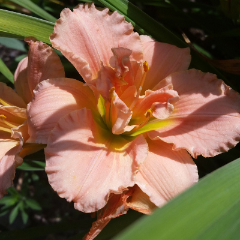
Siloam Double Classic
This award-winning classic blooms early in the season, mightily. Its earliest blossoms open as singles but are closely followed by double blooms for the remainder of its bloom time. Once established, it has a very high bud count rewarding you with clumps laden with complex, delicate, pale peach blossoms; stands 16 inches high with 5 ½ inch blooms.
Siloam Double Classic
Get in Touch
We would love to hear from you! or give us a call. You can reach Joan at 607-272-9072 , Ann at 607-277-3478 or Linda at 607-564-7597 Our address is 77 Halseyville Rd. Ithaca, NY 14850 (view map).

Continue Exploring
Visit the American Hemerocallis Society for additional information including a daylily dictionary, database, and frequently asked questions.